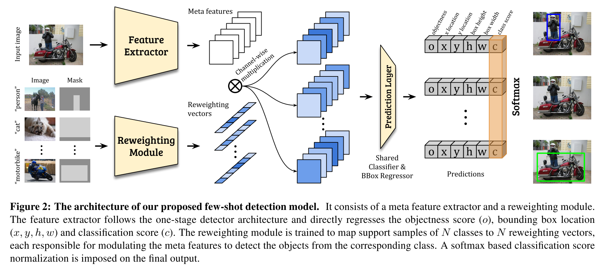

Few-shot Object Detection via Feature Reweighting
URL: https://arxiv.org/pdf/1812.01866.pdf
ICCV 2019的一篇论文, 做few shot detection，论文主要的贡献点是提出了一个新的few shot pipeline，主要分成三个部分： meta extractor，有点类似meta learning里面的逻辑，学习object有区分度的信息,不同的meta信息用最后feature map中不同的channel表示；reweight module 类似SE的逻辑来针对性加强不同的meta信息对于不同的输入图片,所以它输出的维度是和channle数一致的(#channel)；最后就是一个prediction module论文中用的就是yolo系列的检测框架来完成检测任务的，前面两个模块相乘之后新的feature map会作为prediction module的输入，具体的pipeline可以参考论文提供的这张图还是比较详细的：

那么接下来让我们看看这些模块以及最后的模型具体是怎么训练的，怎么work的，整个学习过程分为两个阶段:
- base training, 用比较丰富的训练数据(base set)去学习比较好的meta extractor/reweight module/prediction module
- few-shot fine-tuning，用base set和novel set去一起学习，由于novel class的训练数据很少所以为了数据均衡，base class训练的时候采样和novel class保持一致，然后剩下来的过程就是base training阶段的就一摸一样了，只是训练时间会短很多。
然后论文似乎主要的内容就都在这了，需要说明的几点：
- meta extractor和prediction module虽然论文是分开说的，但应该是一体的，reweight参数修饰的feature map应该是backbone的输出，prediction module更多应该代表head部分，整个模型是基于yolov2的
- reweight module的输入是roi，也好理解毕竟是要突出具体的object，论文的做法是在rgb3个channel之上再append一个mask channel，有目标target的地方值为1其他地方值为0，在ablation里面还是解释一下直接抠图然后再append到原图和用mask这样做的差别，点上要高一点
- 论文里面还特意提了一句reweight module在inference的时候可以干掉，原因是如果我知道我将要检测哪个类别的数据，我只要把k个sample直接喂进去对weight vector取平均作为最后的weight vector，然后再inference，这个不要理解错，实际上这玩意还是去不掉的，本质和se没看到啥差别。
本博客所有文章除特别声明外，均采用 CC BY-NC-SA 4.0 许可协议。转载请注明来自 Out of Memory！